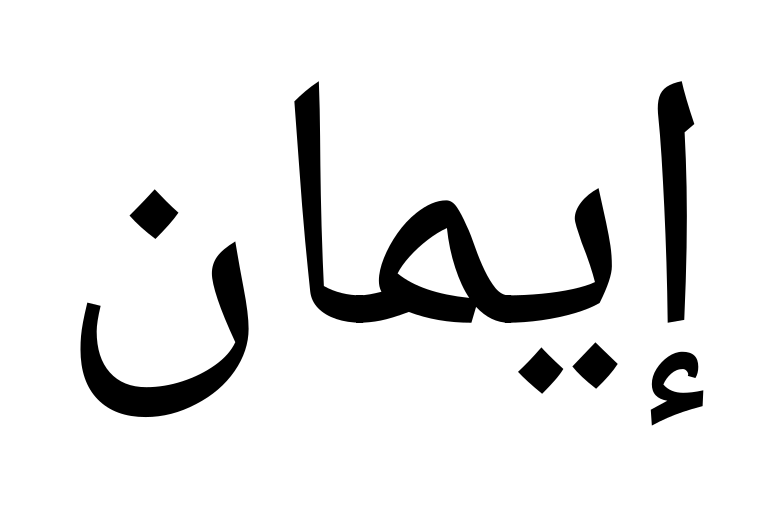

Exact candidate prompt — name reference only
Create one photorealistic studio photograph of an original Arabic name necklace.
Spell exactly "إيمان" in naturally joined, upright Arabic. Required identifying marks: 1 hamza below إ (letter 1 in right-to-left reading order); 2 dots below ي (letter 2 in right-to-left reading order); 1 dot above ن (letter 5 in right-to-left reading order). Keep each mark with its owning letter and retain the number and above/below placement. Natural joining groups, in reading order: "إ" / "يما" / "ن". These groups describe linguistic breaks; the displayed name remains one complete Arabic word.
Image 1, @name: exact customer spelling, identifying marks and contextual letter forms. Its contours and spacing are a readable name specimen, not a finished pendant outline. Preserve the written identity while creating a new jewelry composition.
Make one connected metal pendant body. Add a narrow non-letter bridge across each natural break: "إ" to "يما", "يما" to "ن". Give every detached identifying mark a visible narrow support to its own letter/group; keep its original position. Keep support stems distinct from letter strokes and preserve open counters. Grow two closed eyelets from substantial body strokes: one on the rightmost group and one on the leftmost group. Eyelets must not replace dots, turn into letters or hang from a detached mark. Each eyelet receives a separate closed connector, which also passes through the first Cable-chain link. Show finite-width metal joins and readable interlocks.
Design a fresh, balanced composition with Classic Naskh character. You may choose graceful proportions, curves, flourishes and support routing while retaining the name and required relationships. Polished white gold, stone-free, Cable chain. No surrounding frame, backing plate, captions, labels or extra symbols. Near-front view on matte ivory under broad soft light; frame the entire pendant and both attachment junctions with sharp, readable metal edges and coherent reflections.
Reference 1: this customer's name

Code renders this from the pinned font. The name is authoritative; its exact silhouette is not the finished pendant design.
The model still designs the pendant
It chooses proportions, curves, flourishes, visual balance and support routing within the fixed spelling and connection rules.
Local candidate only. No new jewelry photograph has been generated from this input yet.
Complete request + identity graph · Exact prompt text